Reference figures
AASHTOPlasticityChart
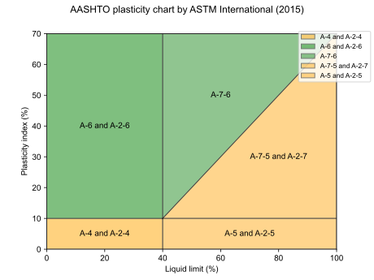
AtterbergLimits
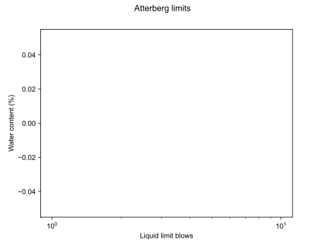
BasicInfluenceFactorI1
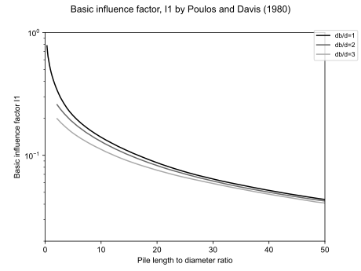
CoefficientOfConsolidationNAVFAC1982
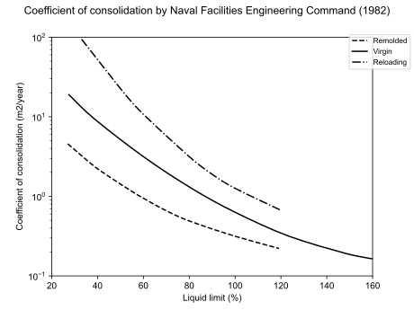
CompressionRatioLambe1969
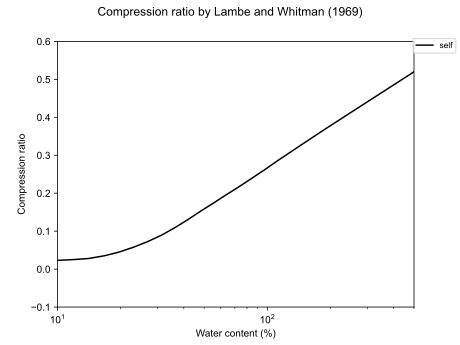
CrossCorrelation
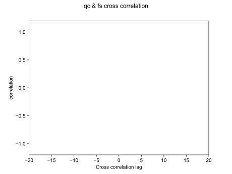
DiameterAt50PercentFinerSaye2017
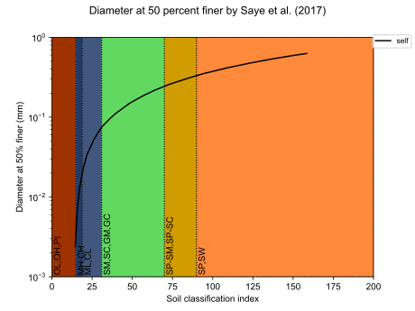
FinesContentSaye2017
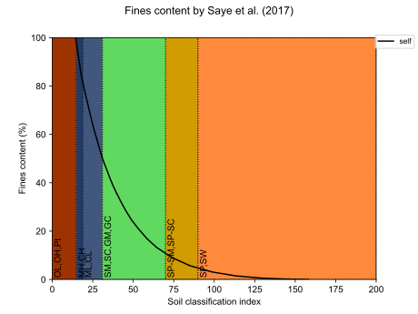
HydrometerAnalysis
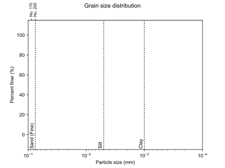
LiquefactionDamage
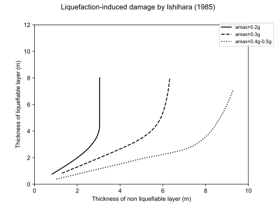
LiquefactionSusceptibility
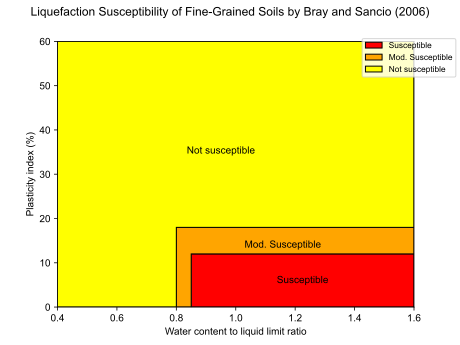
ModifiedSoilBehaviourType
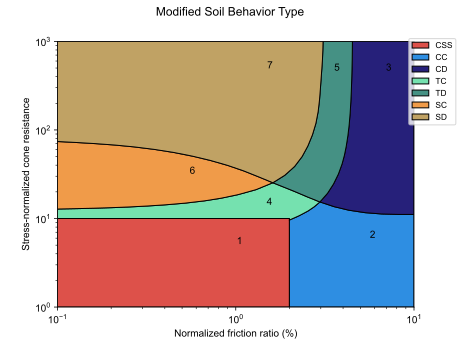
NatureOfSoil
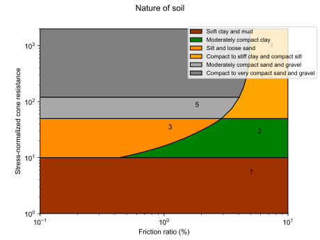
NormalizedConeResistanceFinesIncSeed1987
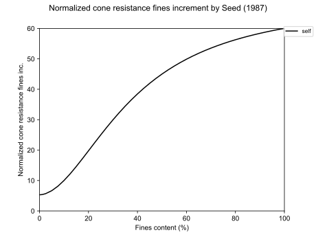
NormalizedSoilBehaviourType
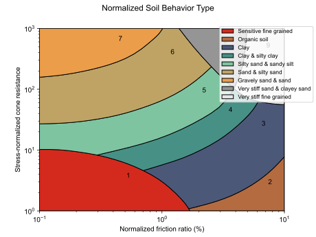
NormalizedSoilBehaviourTypeCompactability
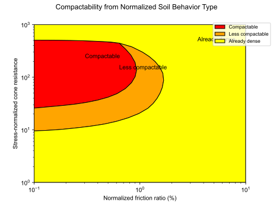
PeriodLengtheningRatio
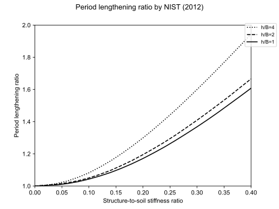
PileFrictionCoefficient1Semple1984
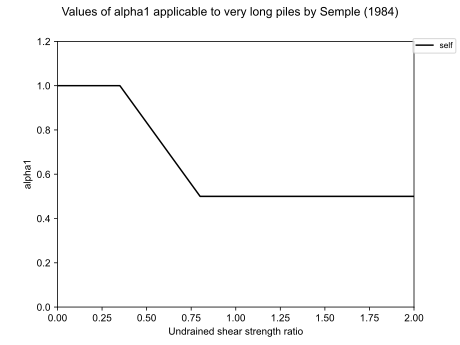
PileFrictionCoefficient2Semple1984
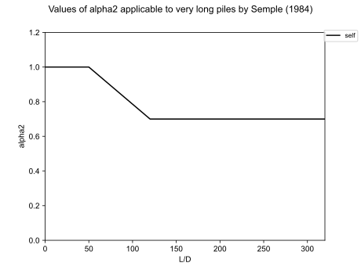
PileFrictionCoefficientAPI1975
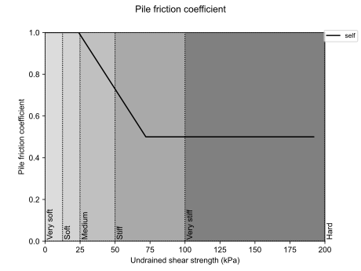
PileGroupDampingRatioX
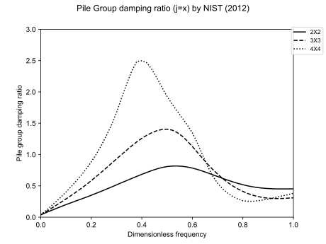
PileGroupDampingRatioYY
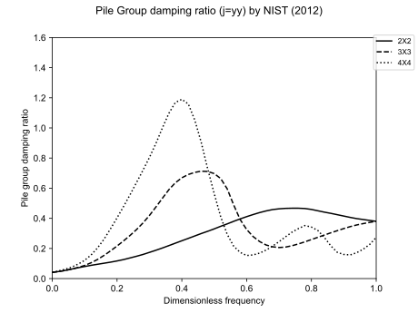
PileGroupDampingRatioZ
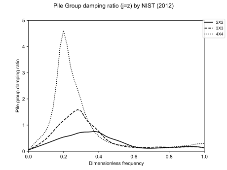
PileGroupEfficiencyFactorX
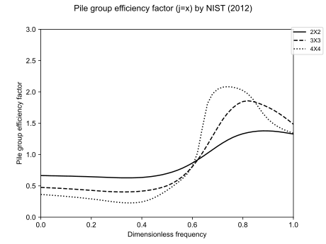
PileGroupEfficiencyFactorYY
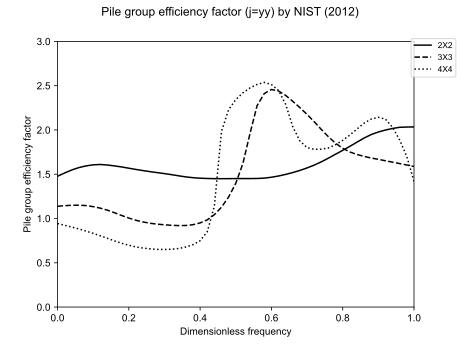
PileGroupEfficiencyFactorZ
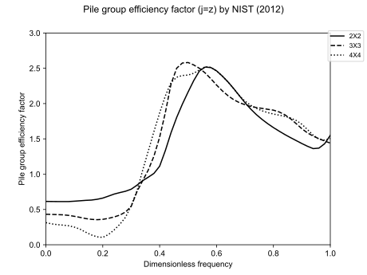
PileSettlementCorrectionBearingLd10
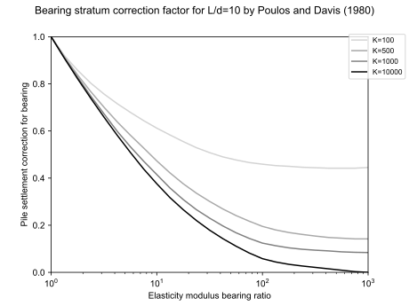
PileSettlementCorrectionBearingLd25
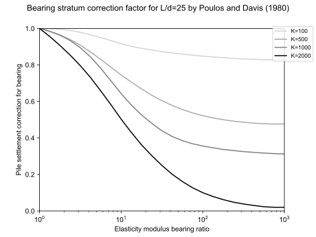
PileSettlementCorrectionBearingLd5
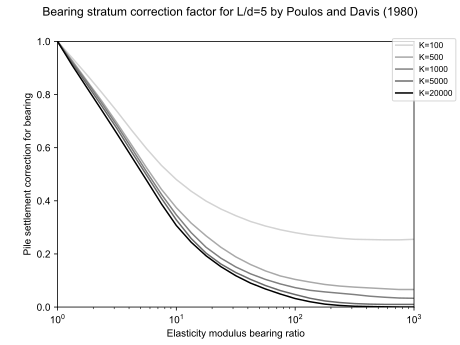
PileSettlementCorrectionBearingLd50
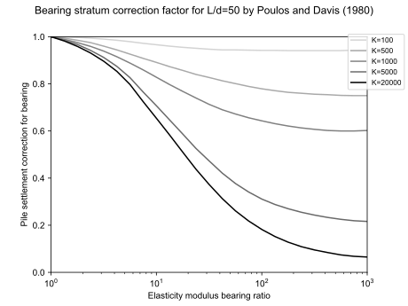
PileSettlementCorrectionBearingLd75
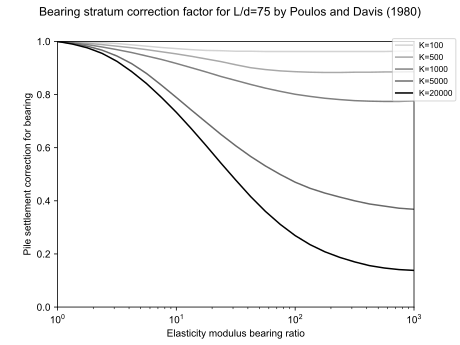
PileSettlementCorrectionCompressibility
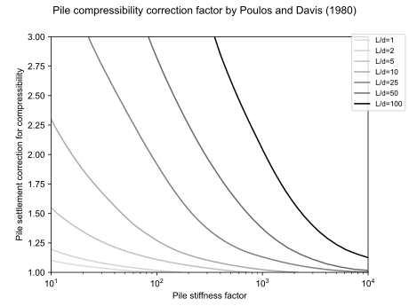
PileSettlementCorrectionDepth
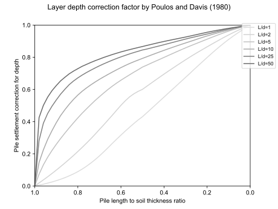
PileSettlementCorrectionPoisson
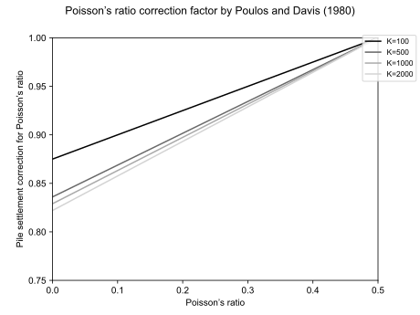
PunchingShearCoefficientMeyerhof1978
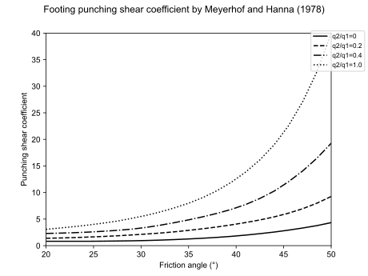
RelativeDensityReyna1991
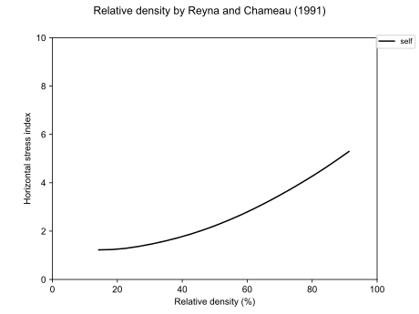
ResponseSpectra
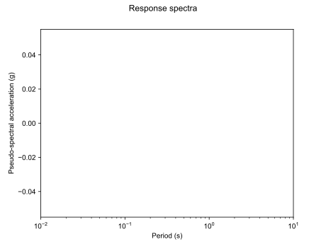
SieveAnalysis
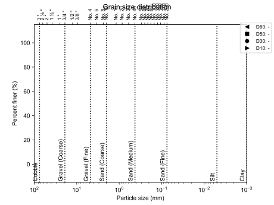
SoilBehaviourType
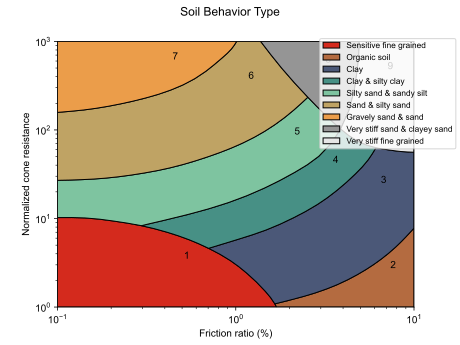
SoilBehaviourTypeDMT
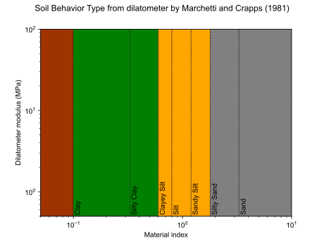
SoilBehaviourTypeSchneider
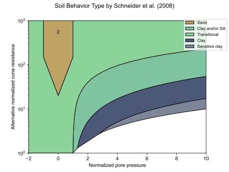
SoilTypeIndex
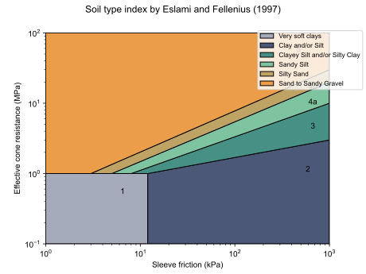
UnitAdhesionToCohesionRatioMeyerhof1978
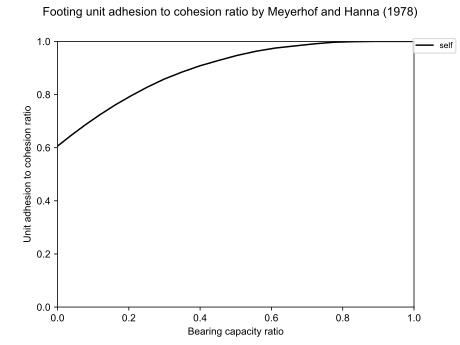
USCSMoreno2018PlasticityChart
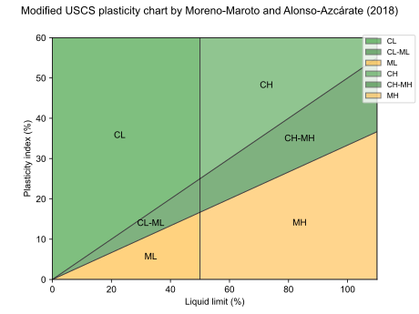
USCSPlasticityChart
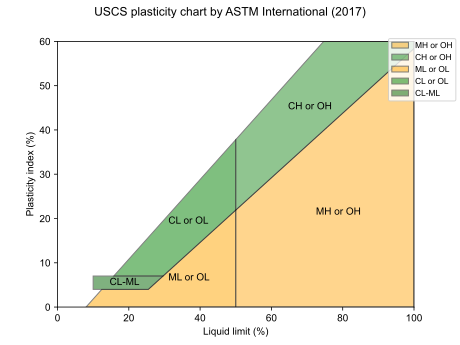
USDAMoreno2018Chart
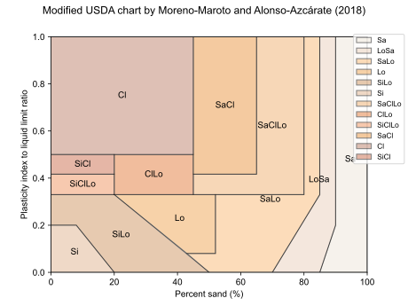
USDATernaryChart
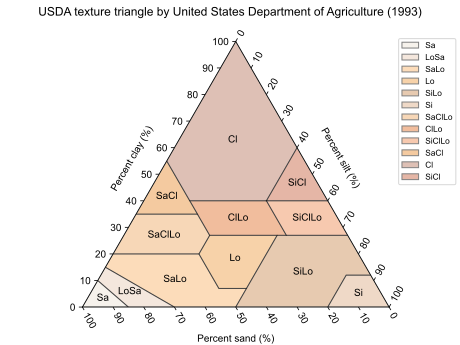